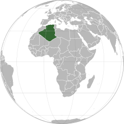
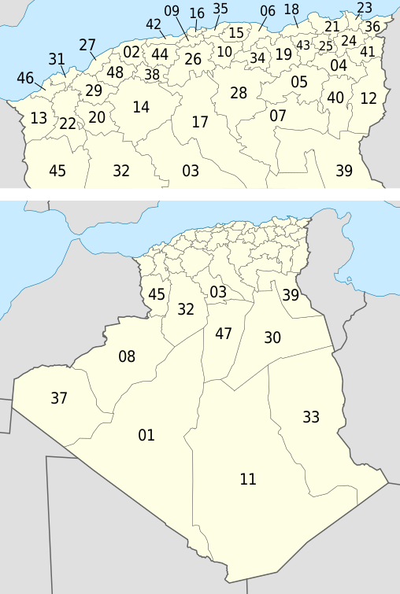
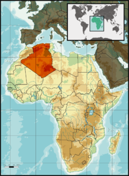

الاسم:الجزائرعدد السكان: 43,05 Millionالديانة: الاسلامالمساحة: 2381741 كيلومتر مربعالعملة: الدينار الجزائري
الاسم:الجزائرعدد السكان: 43,05 Millionالديانة: الاسلامالمساحة: 2381741 كيلومتر مربعالعملة: الدينار الجزائري
الجزائرالجَزائِر (بتيفيناغ: Algeria tifinagh.svg) أو (رسمياً: الجمهورية الجزائرية الديمقراطية الشعبية)، هي دولة عربية ذات سيادة تقع في شمال أفريقيا. عاصمتها وأكثر مدنها اكتظاظا بالسكان هي مدينة الجزائر، وتقع في أقصى شمال البلاد. بمساحة تبلغ 2 381 741 كيلومتر مربع (919,595 ميل مربع)، الجزائر هي عاشر أكبر بلد في العالم، والأولى إفريقياً وعربياً ومتوسطياً والثانية في العالم الإسلامي بعد جمهورية كازاخستان. تطل شمالاً على البحر الأبيض المتوسط، وتحدها من الشمال الشرقي تونس وشرقا ليبيا وغرباً المغرب والصحراء الغربية ومن الجنوب الغربي موريتانيا ومالي، ومن الجنوب الشرقي النيجر. نظام الحكم في الجزائر شبه رئاسي، وتقسم إدارياً إلى 58 ولاية و1541 بلدية. عرفت الجزائر قديما العديد من الإمبراطوريات والحضارات، بما في ذلك حكم النوميديين والفينيقيين والبونيقيين والرومان فالوندال ثم البيزنطيين. وبعد الفتح الإسلامي شهدت البلاد أو أجزاء منها سيطرة كل من الأمويين والعباسيين والأدارسة والأغالبة والرستميين، والفاطميين، والزيريين والحماديين، والمرابطين والموحدين والحفصيون فالعثمانيين. وشهدت في القرن التاسع عشر الاحتلال الفرنسي للجزائر. تعدّ الجزائر قوة إقليمية ومتوسطية. وهي عضو مؤسس في الاتحاد الإفريقي، وعضو مؤسس في اتحاد المغرب العربي، وعضو في جامعة الدول العربية ومنظمة الأمم المتحدة منذ استقلالها، وأوبك والعديد من المؤسسات العالمية والإقليمية. وتعد صادرات الطاقة العمود الفقري لاقتصادها. وبحسب منظمة الدول المصدرة للنفط (أوبك)، فإن الجزائر تحتل المرتبة ال 16 من حيث احتياط النفط في العالم وثاني أكبر احتياط نفطي في أفريقيا، في حين أنها تحتل المرتبة التاسعة من حيث احتياطيات الغاز الطبيعي. تقوم بتوريد كميات كبيرة من الغاز الطبيعي إلى أوروبا. سوناطراك، الشركة الوطنية للنفط، هي أكبر شركة في أفريقيا. تلقب ببلد المليون ونصف المليون شهيد نسبة لعدد شهداء ثورة التحرير الوطني التي دامت سبع سنوات ونصف. يعيش معظم الجزائريين في شمال البلاد قرب الساحل، لاعتدال المناخ وتوفر الأراضي الخصبة. ووفقا للمادة الثانية من دستور البلاد فإن الدين الرسمي للدولة الجزائرية هو الإسلام، واللغة الرسمية والوطنية هي اللغة العربية واللغة الأمازيغية لغة رسمية ثانية وفقا لما أقره تعديل دستور 2016 من قبل الرئيس السابق بوتفليقة. يصف دستور الجزائر «الإسلام والعروبة والأمازيغية» بالمكونات الأساسية لهوية الشعب الجزائري، والبلاد بأنها «أرض الإسلام، وجزء لا يتجزأ من المغرب العربي الكبير، وأرض عربية، وبلاد متوسطية وإفريقية». 
استقبلت الجزائر العديد من الحضارات ما جعلها ترث تاريخا غنيا، فقد أثرت أفريقيا والبحر المتوسط وأوروبا والمشرق في كتابة هذا التاريخ. أول البقايا الأثرية الملحوظة هي تلك التي تركها الإنسان في الحديقة الوطنية لطاسيلي، التي تعدّ أكبر متحف مفتوح في العالم. وتنتشر الأضرحة في مناطق عدة من البلاد مثل كإيمدغاسن، الضريح الملكي الموريتاني وضريح بني ريحان بولاية عين تيموشنت وأيضًا الموقع الأثري ضريح الملك ماسينيسا (سوما) أو الخروب بقرب سيرتا (قسنطينة حالياً) التي توجد في ولاية قسنطينة وأيضا العديد من الغيران والأضرحة كدجيدارس وفرندة وغيرها التي تشهد على الطرق والممارسات الجنائزية. تركت الفترة الرومانية العديد من الآثار والمعالم في تيبازة وتيمقاد، ناقوس، زانا، كالما، ماداوروش، خميسة، شرشال، جميلة، تيديس، هيبون. بعد الفتح الإسلامي لشمال أفريقيا، شهدت المنطقة تطور العديد من المدن الجزائرية كتلمسان، الجزائر العاصمة وبجاية والعديد من السلالات عبر الزمن التي أصبحت سلالات حاكمة في عدة مناطق جزائرية. وفي العام 1515م قام العثمانيون بضم الجزائر لإمبراطوريتهم، ثم احتل الفرنسيون الجزائر سنة 1830م التي تحررت بعدها سنة 1962م. ما قبل التاريخ مناطق أنتشار الحضارة العاترية والحضارة القفصية وجد في عدة مواقع أثرية عظام بشرية عمرها مليوني عام وقد وجد بعين الحنش بالعلمة ولاية سطيف آثار لصناعات جد قديمة. آخر الصادين في المنطقة ممثلون في شمال شرق الجزائر من طرف القبصيين الدين وثقوا ذلك منذ 8000 عام. لقد بينت الاكتشافات والحفريات التي جرت بمنطقة "تيغنيف" العثور على مقبرة فيلة من النوع المنقرض الذي يطلق عليه الفيل الأطلنطي وعاش هذا الحيوان في عصور ما قبل التاريخ مما يدل على وجود حياة في هذه المنطقة منذ آلاف السنين ويبقى الاكتشاف الأهم في التاريخ العالمي وكذا الوطني هو العثور على أقدم إنسان في شمال أفريقيا وهو رجل ما قبل التاريخ أو رجل الأطلس ويسميه البعض رجل تيغنيف أو رجل تيغنيفين وقد أعلن عنه في أكتوبر 1952 بعد دراسة الحفريات والأدوات المستعملة في ذاك العصر وذلك بحضور أربعين مختصاً من أنحاء العالم و"الدكتور ليكي" مدير "متحف نيروبي". مدينة وتيغنيف كلمة أمازيغية تعني البركتين (المصدر؟) كان يقف عندهما الزوار منذ عهد الرستميين والموحدين ويقدر تاريخها بأكثر من 500.000 سنة. يوجد بتغنيف قرب معسكر موقع للحضارة الأشولية وجد به العديد من العظام الحيوانية والبشرية (3 فكوك سفلية، عظم جداري وبعض الأسنان) نسبة إلى جنس ونوع جديدين من قبل كميل أرامبورغ عام 1954 وهو "الأتلانتروب". الفكوك ذات حجم كبير جداً وهو ما يشير إلى وجود بشر ضخام الجثث. وجد بالموقع أيضاً آثار صناعة حجرية أشولينية تضم العديد من السواطير (بالإنجليزية: "Cleaver tool") والفؤوس اليدوية. في الجنوب، تميزت الصحراء في العصر الحجري بأنها كانت فترة مزدهرة بسبب المناخ الأكثر الرطوبة من المناخ الحالي، كان إنسان هذه الفترة يرسم ويعلّم مكان عيشه برسومات عن الحياة اليومية. تملك الأوراس عدة مواقع أثرية من ما قبل التاريخ حيث أن عدة غيران كانت ماْهولة لقربها من إحدى أكبر مواطن الحضارية البدائية والتي عرفت بالحضارة العاترية ونواتها بئر العاتر بضواحي تبسة، عاشت تحت ظل العاترية في الفترة الممتدة بين العصر الحجري القديم والعصر الحجري الحديث، قد تم العثور على العديد من الأدوات الحجرية التي ترجع إلى هذه الفترة منها رؤوس أسهم ذات عنق في كل من سوق أهراس، تيفاش وتاورة، من أروع شواهد فترة عصر ما قبل التاريخ بولاية سوق أهراس النقوش الصخرية المتواجدة إلى اليوم بموقع كاف المصورة، إذ تعود إلى 7000 سنة قبل الميلاد أي فترة الإنسان العاقل وهي من نوادر اللوحات الإنسانية في شمال أفريقيا، هذا بالإضافة إلى الرسومات الليبية لموقع كاف الرجم ضواحي سدراتة، الجزائر خلال العهد الفينيقي Crystal Clear app kdict.png مقالة مفصلة: الفينيقيون في الجزائر التواجد الفنيقي في البحر الأبيض المتوسط الفينيقيون هم أمة سامية من ولد كنعان بن لاوذ بن سام بن نوح عليه السلام كانوا يستقرون بجزيرة العرب وارتحلوا بعد ذلك إلى الشام مع إخوانهم ليستقروا بفينيقيا، أرض لبنان الحالية وجزء من سوريا وفلسطين، وصار الشام يطلق عليها أرض كنعان وهم العرب في نسبهم ووطنهم. كان الفينيقيون يسيطرون على التجارة الداخلية والخارجية لسواحل البحر المتوسط، بعد أن أنشؤوا محطات تجارية، من أبرزها قرطاجنة عام 814 ق.م على الساحل التونسي. ولقد امتد نفوذ قرطاجنة ليصل إلى غاية السواحل الجزائرية، ليؤسسوا بها مدناً ساحلية جزائرية، كبجاية وتنس وشرشال وهيبون (عنابة)، جيجل ووهران. العلاقات السياسية لقد كانت العلاقات الجزائرية مع قرطاجنة موصوفة بالمودة، وهذا ما يظهر جليا من خلال العلاقات التجارية والمصاهرة التي كانت بينهم، فقرطاجنة لم تشأ أن تبسط نفوذها على الأراضي الجزائرية، ما دام مصالحها مضمونة من خلال التحالفات التي كانت قائمة بين أمراء الأمازيغ، وما دام هذا الأمر يجعل من قرطاجنة الوصية والحامية على الإمارات الأمازيغية. العلاقات الاقتصادية لم يكن يهم قرطاجنة التوسع في الأراضي الجزائرية، بقدر ما كان يهمها استثمار أهل البلاد واستغلالهم، وهذا ما جعل النوميد الأمازيغ يكرهونهم، لإن هذا الاستغلال كان قبيحا وقاسيا، فهدف قرطاجنة من خلال إقامة تلك العلاقات الودية مع الجزائريين، هو ضمان القدر الكافي من الأمن للسماح بالازدهار التجاري. نوميديا Crystal Clear app kdict.png مقالات مفصلة: نوميدياالجيش النوميديالخيالةالعملة النوميدية مملكة نوميديا بعد التوحيد من قبل ماسينيسا يعتبر ماسينيسا أشهر الملوك النوميديين الرحل ولد ماسينيسا بخنشلة ثم اتخذ سيرتا (قسنطينة حالياً) عاصمة له ولا يزال قبره موجودًا هناك. تميز ماسينيسا بقدراته العسكرية بحيث أنتصر على حنبعل القرطاجي أهم الجنرالات التاريخيين، في معركة زاما بالحدود الجزائرية (الحدادة) الحالية سنة 202 قبل الميلاد. وفي عهده برزت مملكة مملكة نوميديا العظمى في ميادين عسكرية وثقافية كما جهز الأساطيل ونظم وشجع على الإستقرار وتعاطي الزراعة وشجع التجارة الذي جعله يعتبر أبرز الملوك الأمازيغ القدماء. الملك ماسينيسا موحد نوميديا شمال أفريقيا الفترة الرومانية Crystal Clear app kdict.png مقالات مفصلة: موريتانيا القيصريةموريطنية سيتيفينسيس خريطة تبين موقع نوميديا، موريطنية سيتيفينسيس وموريطانيا القيصرية" في القطر الجزائر وحدودها مع موريتانيا الطنجية موريتانية القيصرية الجزائر في ظل الاحتلال الروماني أطلقت الإمبراطورية الرومانية على القسم الشرقي من المملكة التي كان يحكمها الملك "بطليموس" ابن يوبا الثاني اسم مقاطعة موريتانية القيصرية كان ذلك عام 42 م بعد أن غزا الإمبراطور كاليغولا لتصبح المملكة في حوزة الإقليم العسكري الخاضع لسلطة التاج الإمبراطوري مباشرة. ومعروف أن موريطانية الشرقية أصبحت تنعت بالقيصرية نسبة لعاصمتها الإدارية ايول (شرشال حالياً) التي غير اسمها يوبا الثاني وأطلق عليها لقب حليفه (الإمبراطور اوكتافيوس أغسطس) الملقب بقيصر تكريما له وعرفانا بفضله عليه ثم عمل على جعلها مدينة مشابهة للمدن الهلينسية في مظهرها العمراني ومضمونها الحضاري ونظرا للشهرة التي بلغتها عاصمة المملكة أيام تحولها الي الإدارة الرومانية كان طبيعيا أن يتخذ منها مقراً لحكام المقاطعة وتسمي المقاطعة الجديدة المقامة على القسم الغربي من موريطانيا بمقاطعة "مورينانية الطنجية" نسبة لمدينة "طنجة" التي اتخذ منها الحاكم الروماني مقرا لقيادتهم. وموريتانية مصطلح جغرافي اشتقه الأقدمون من اسم (المور) وهم اقوام ليبية قديمة كانت تسيطر على المناطق الغربية من بلاد المغرب العربي وتعني الأسود (البشرة السوداء) وفي رواية أخرى وأغلب الظن أن للمصطلح جذور فنيقية على اعتبار القرابة اللغوية من حيث اللفظ والمعنى بين عبارة (ماحورين) الفينيقية التي تعني أهل المغرب أو المغاربة الذين يقطنون الجهات التي تغرب فيها الشمش وهي مطابقة لما تعنيه كلمة (مغرب) في العربية. وعبارة (ماور) أو (مور) (Mouros) التي حافظت على نفس المدلول الجغرافي عند اليونان والرومان ومنهما إلى اللغات الأوربية الحديثة. ولعل اقتناع الرومان بدقة مدلول هذا المصطلح هو الذي جعلهم يحتفظون به ولم يغيروه ولو جزئيا رغم الخلط الذي نظن أنه ربما كان يحدث لهم عندما أبقوا على مقاطعتين متجاورتين تسميان به موريتانية القيصرية غرب الجزائر وموريتانية الطنجية إذ أن كلا المقاطعتين تقعان في جهة الغرب بالنسبة إليهم ولايميز بينهما سوى اسمي عاصمتيهما وحتى المقاطعة الثالثة التي استحدثوها فيما بعد على الجزء الشرقي من موريطنية سيتيفينسيس وعاصمتها (سطيف حالياً) احتفظوا لها بنفس الاصطلاح وميزوها عن المقاطعتين القديمتين باسم عاصمتها الإدارية. الممالك الأمازيغية Crystal Clear app kdict.png مقالة مفصلة: نوميديا مملكة نوميديا عندما اشتد الصراع بين روما وقرطاجة، ونشبت بينهما الحروب البونيقية التي استمرت 120 عاماً (من 264 ق.م. إلى 146 ق. م). استطاع الأمازيغ أن يتحرروا من نفوذ قرطاجة، وكوّنوا لأنفسهم دولة مستقلة شملت الأوسط والأقصى. و لعل أشهر ملوك الأمازيغ في هذه الفترة هو ماسينيسا، فقد وقف حياته في خدمة بلاده وتوفير مصالح شعبه، وعمل على نشر اللغة القومية بين الشعب، وكوّن جيشا وأسطولا أمازيغيا قويا، وضرب النقود باسمه، وارتقى بوسائل الري والفلاحة وجَلب لذلك الخبراء الفنيين من اليونان وإيطاليا، وعمل على توطيد علاقاته مع روما عدوّة قرطاجة ليحقق هدفه الذي عاش يعمل له وهو توحيد نوميديا و قد ظل في نزاع مع قرطاجة، ناصرته فيه روما ولكنها أرسلت جيوشها خشية أن يتغلب على قرطاجة ويوحد شمال أفريقيا ويتعاظم أمره ولا تأمن روما القوة التي تنجم عن الوحدة السياسية النوميدية. وعندما انتصرت روما على قرطاجة ودمرتها عام 146 ق م. قسمت بلاد المغرب العربي إلى ثلاث وحدات إدارية هي : أفريقيا كانت تشمل أكثر المدن التونسية وقد وضعت تحت الإدارة الرومانية مباشر. قسنطينة وقسمت مناصفة إلى مملكتين، أحدها برئاسة مسبسا ابن ماسينيسا ملك نوميديا. وكانت تمتد من البلاد التونسية إلى والآخر برئاسة يوغرطة موريطانيا القيصرية ووضع على رأسها القائد الأمازيغي يوبا الثاني هذا ولم يخضع الملك يوغرطا للرومان، وبذل جهوده في ترقية شعبه. وعمل على توحيد المغرب العربي واستطاع أن يبسط نفوذه على مملكة نوميديا كلها وخشيت روما أن يدين له كل نوميديا فأعلنت عليه الحرب، وانتصر الرومان. وقد تمتعت موريطانيا القيصرية بالاستقلال والرخاء والنهضة في ظل ملكها يوبا الثاني الجزائري أبن عنابة 25 ق.م إلى 40 ميلادية. وقد سهر هذا الملك على خدمة بلاده ومصالح رعاياه ونهض بالزراعة والري وازدهرت الحياة الاقتصادية في عهده.وقد جعل عاصمته شرشال التي أطلق عليها اسم "القيصرية" وجلب إليها الفنانين والمهندسين من مصر واليونان. وشيدوا في أنحائها القصور الجميلة والهياكل الفخمة. وأصبحت موطن الشعراء والفلاسفة والكتاب. ولاسيما أن يوبا الثاني نفسه كان مولعاً بالعلم. ألّف عدة كتب في الفلسفة والجغرافيا والتاريخ والموسيقى، وبذل من ناحيته عناية فائقة بنشر الثقافة والمعرفة بين رعاياه ولم يكتمل للرومان بسط مطلق نفوذهم على جميع بلاد المغرب الكبير إلا بعد أن فشلت ثورة تاكفريناس. الذي أعلن العصيان في نوميديا والثورة على روما، وعندما استسلم، بسطت روما سلطانها على بلاد المغرب الكبير واستعمرتها بشكل مباشر واستقر حكمها لشمال أفريقيا. الحضارة الرومانية في أفريقيا الشمالية استوطن الرومان بلاد المغرب الكبير وبذلوا طاقاتهم في استعمارها وعملوا على تكثر أرض المغرب العربي من إنتاج ما يمون روما وبذلك حفروا الآبار وشقوا القنوات ونظموا وسائل الري وتعهدوا الفلاحة وأقاموا القناطر والطرقات ومن ذلك الطرق المرصوفة الكبيرة التي وصلت بين المدن الكبرى مثل الطريق الذي كان يصل بين شرشال وطريق تلمسان وقرطاجنة قسنطينة وطرابلس وتافنة وقد استخدمت هذه الطرق في الشؤون التجارية ورغم أن الرومان كانوا قد شقوها لأغراض عسكرية. وقد تزايد الإنتاج الزراعي والحيواني والصناعي في نوميديا حتى أصبحت شمال أفريقيا تمول روما بالحبوب والفواكه والخمور والصوف والزيوت والمرمر والمصابيح الزيتية والأقمشة وآنية والخيول والبغال وكذلك كانت شمال أفريقيا تمد روما بالحيوانات الضارية التي كانت عاصمة الإمبراطورية تحتاجها في ألعابها وحفلاتها ونتج عن ازدهار التجارة، أن ارتفع مستوى المعيشة وتضخمت الثروات وعددت المباني الفخمة وتزايد عدد السكان كما ازدهر الفن والأدب ومختلف العلوم وظهر من بين البرابرة كتاب مبدعون وفلاسفة خالدون سيما بعد دخول المسيحية بنحو قرنين إلى البلاد ومن ذلك الكاتب ترتوليان الذي ولد بمدينة قرطاجنة والذي درس الحقوق وعمل قسيسا وصل إلى روما حيث مات عام 222 م وأشهر مؤلفاته تلك التي قاوم بها الوثنية ومن أعلام الفكر الجزائري القديس أوغسطين الذي ولد عام 354م بمدينة طاغاست ومات عام 430 م بمدينة عنابة وأشهر مؤلفاته "مدينة الآلهة" وقد بدأ ازدهار الفن في نوميديا خلال العهد الروماني في تشييد الهياكل الفخمة المزدانة بالأعمدة الرخامية والتماثيل الجميلة والمسارح والحمامات المزدانة بالفسيفساء وامتازت المنازل بالأروقة والأعمدة الرخامية والنوافير والحدائق، ولا تزال بعض هذه الآثار الرومانية منتشرة في مختلف أنحاء بلاد الشمال الأفريقي سيما من شرشال، تيمقاد، خميسة، مادور،. الاحتلال الوندالي الاحتلال الوندالي لبلاد المغرب العربي: تم بين سنتي 429م إلى 534م أسباب الاحتلال الوندالي لبلاد المغرب الأوسط: الطمع في ثروات ءالمغرب الأوسط استنجاد الوالي الرماني بهم رغبة الوندال في الوصول إلى روما عن طريق المغرب الأوسط ضغط قبائل القوط عليهم دخول الوندال إلى المغرب الأوسط: دخلوا من الجهة الغربية عبر مضيق جبل طارق وزحفوا حتى وصلوا إلى قرطاجة واستقروا هناك. سياسة الوندال: قاموا بأعمال تخريبية كبيرة وأخذوا الأراضي الخصبة لهم، وعاملوا النوميد بوحشية انبعاث الإمارات المستقلة بالمغرب الأوسط: تمكن النوميد في ظل الحكم الوندالي من إنشاء الإمارات التالية: مملكة التافنة: تمتد من الشلف إلى ملوية مملكة الحضنة: تشمل منطقة التيطري مملكة الأوراس: وتشمل الشمال الشرقي من الجزائر سقوط دولة الوندال: انتهى الحكم الوندالي بالمغرب الأوسط سنة 534 م على يد البيزنطيين ويخضع المغرب الأوسط بعد ذلك للحكم البيزنطي الاحتلال البيزنطي بعد انهيار الدولة الرومانية وانقسامها بين الإمبراطورية الغربية التي يسيطر عليها القوط والإمبراطورية الشرقية "البيزنطية" وعاصمتها "القسطنطينية"وقعت الجزائر تحت حكم الاحتلال البيزنطي وذلك حتى عصر الفتوحات الإسلامية. الجزائر في ظل الدول الإسلامية الساحل البربري والأسطول البحري الجزائري والأسد البربري وحدودها مع تونس ومملكة فاس سنة 1588م الدولة الرستمية اٍمتداد الحركة الدينية الإباضية في بلاد المغرب (المغرب العربي) والتي تعطي الآن بالجزائر مملكة تاهرت. الرستميون، سلالة من الإباضية حكمت في بلاد المغرب (الجزائر، تونس وليبيا) بين 776-909 م، مقرها كان مدينة تاهرت أو تيهرت وتسمى اليوم تيارت (في الجزائر). مؤسس السلالة، عبد الرحمن بن رستم (ذو أصول فارسية) كان منذ 758 م والياً على القيروان من قبل الإباضية. فر بعد عودة الولاة العباسيين إليها إلى تيهرت، بويع إماما على الجماعة (776-784 م). حكم الرستميون في مناطق الشمال الجزائري أثناء عهد ابنه عبد الوهاب (784-823 م) ثم وضع نفسه صرفيا تحت حماية الأمويين حُكّام الأندلس، الشيء الذي مكنه من إقامة علاقات جيدة (تجارية) مع الأندلس. توطدت الدولة وساد الإستقرار في عهد أبو سعيد الافلح (823-868 م) ثم أبو حاتم ويسف (868-894 م) من بعده. أصبحت تاهرت عاصمة ثقافية وفكرية في الشمال الأفريقي. سنة 908 م قام أبو عبيد الله صاحب الفاطميين بالقضاء على دولتهم. تحول بقايا الإباضيين نحو الجنوب الجزائري، واستقروا في منطقة وادي ميزاب، من أهم مدنهم اليوم غرداية. الدولة الإدريسية Crystal Clear app kdict.png مقالة مفصلة: الدولة الإدريسية كانت مناطق المغرب غير التابعة للدولة الرستمية قبل ظهور الأدارسة تتكون من عدة إمارات تتنازع حكمها قوى مختلفة في الشمال والوسط والجنوب، ويتوزع سكانه بين أتباع عدة ديانات سماوية وعبادة الأوثان. تمكن المولى إدريس بن عبد الله المنتسب للبيت النبوي الشريف من الوصول إلى المغرب سنة 788 م وبايعته القبائل الأمازيغية بمدينة وليلي، فوضع بذلك نواة ثالث دولة مستقلة عن الخلافة في العالم الإسلامي بعد إمارة قرطبة والدولة الرستمية، وهي الدولة الإدريسية. بعد مقتل إدريس الأول بايعت القبائل ابنه إدريس الثاني سنة 803 م، الذي أسس مدينة فاس واتخذها عاصمة لحكمه، كما عمل على تنظيم الإدارة والجيش وتوحيد البلاد، ولم تتجاوز حدود الأدارسة غرباً منطقة تلمسان. بعد وفاة إدريس الثاني تنازع أبناؤه على الحكم، فانقسمت المملكة وضعفت حتى سقوطها سنة 974 م. الدولة الأغلبية Crystal Clear app kdict.png مقالة مفصلة: دولة الأغالبة الأغالبة أو بنو الأغلب (184-296 هـ/ 800-909 م) سلالة عربية لينة من بني تميم حكمت في المغرب الكبير (شرق الجزائر وتونس وغرب ليبيا) مع جنوب إيطاليا وصقلية وسردينيا وكورسيكا ومالطة. دولة الأغالبة في أقصى اتساع لها كانت حدود دولة الأغالبة وعاصمتها القيروان تتسع وتتقلص بحسب قوة أمرائها وضعفهم. أسس الدولة إبراهيم بن الأغلب بن سالم بن عِقال بن خفاجة التميمي. وكان والده الأغلب ـ الذي سميت الدولة باسمه ـ أول من دخل أفريقيا من هذه الأسرة، التي كانت قد استقرت في مَرْو الرُّوذ في خراسان، منذ الفتح الإسلامي. وكان قيام هذه الدولة في عهد الخليفة هارون الرشيد. وقد تلقب حكام هذه الدولة بالأمراء، وظلوا خاضعين لسلطة الخلفاء العباسيين إسمياً، فصكّوا النقود باسمهم، وخطبوا لهم على المنابر، من دون أن يسمحوا لهم بالتدخل في شؤونهم الداخلية. الدولة الفاطمية Crystal Clear app kdict.png طالع أيضًا: الدولة الفاطمية الدولة الفاطمية في أقصى اتساعها الدولة الفاطمية (358-567هـ/ 969-1172م) لم تنقطع حركات المتشيعين ولم تتوقف، فقد كانوا متعصبين لآرائهم، مؤمنين بفكرتهم، يزعمون أن أحق الناس بالخلافة أبناء علي من نسل السيدة فاطمة الزهراء، فإن نالها غيرهم فما ذاك إلا أمر باطل يجب أن يمحى، وما هو إلا شرٌّ حَلَّ بالمسلمين يجب أن يزال. ونشط دعاة الشيعة في الدعوة إلى مذهبهم، وبخاصة في الجهات البعيدة عن مركز الخلافة، مثل أطراف فارس واليمن وبلاد المغرب. كانت شمال أفريقيا أرضاً صالحةً لنصرة المذهب الإسماعيلي، ذلك أنَّ التشيُّع العَلَويّ تركَّز مُنذ نشأته في المشرق، وظهر في بيئة الكوفة مُتعددة الأجناس والقوميَّات، وانتشر بين الموالي، ثُمَّ انتقل غربا بعد المُلاحقات التي تعرَّض لها الشيعة من قبل العبَّاسيين، وكانوا جميعاً من فرع الحسن بن عليّ بن أبي طالب، وتمركزوا في شمال أفريقيا حيثُ ضعُفت السيطرة العبَّاسيَّة لبُعد المسافة عن مركز إتخاذ القرار في بغداد، ولصُعوبة المُواصلات، ونشروا التعاليم المُشتركة للمذهب الشيعيّ ومآثر العَلَويين ممَّا أدّى إلى انتشار هذا المذهب بين الأمازيغ الذين أدّوا دور الموالي من الفُرس في المشرق، على الرُّغم من وجود فوارق كُبرى بين الفئتين في طبيعة دعمها للعَلويين بعامَّة، وفي مؤسساتهما ومُنظماتهما، وفي أهدافهما وعقائدهما. ورُبَّما كان العطف على آل بيت الرسول مُحمَّد، والاعتقادُ بفضائلهم، كبيراً في المغرب من أيِّ مكانٍ آخر، وقد أتاح للأدارسة السَّيطرة على المغرب الأقصى بدون مشقَّة وتأسيس دولتهم المُستقلَّة. كما اشتمل المغرب الأوسط في النصف الثاني من القرن الثالث الهجري، باستثناء الأراضي التابعة للدولة الرستمية، على إماراتٍ شيعيَّةٍ بلغ عددها تسعُ إماراتٍ، ممَّا هيَّأ الأرضيَّة الخصبة لزرع وتنمية الدعوة الشيعيَّة. لكنَّ المذهب الإسماعيلي دخل إلى إفريقية بصورةٍ أكثر تنظيماً وسريَّةً قبل نحو مائةٍ وخمسةٍ وثلاثين سنة من قُدوم أبي عبدِ الله الدَّاعي، وذلك في أواسط القرن الثاني الهجري المُوافق للقرن الثامن الميلادي، وتركَّز في ديار القبيلة الأمازيغيَّة كتامة في المغرب الأوسط، التي عُرفت بأنَّها أكثرُ القبائل عدداً وأصعبها مُراساً، إذ كانت تسكُن جبال الأوراس الوعرة في جنوب أفريقيا، وهي البلادُ المُمتدَّة من طرابلس الغرب إلى طنجة. تفكك الدولة: خرج بعض الولاة على الخلفاء الفاطميين خصوصاً في شمال أفريقيا؛ مما أدّى إلى استقلال تونس والجزائر، واستولت الدولة السلجوقية التي قامت بفارس والعراق على معظم بلاد الشام التابعة للفاطميين، وإلى جانب هذا كله عمل الصليبيون في الاستيلاء على الأراضي المقدسة فاستولوا على بيت المقدس من أيدي الفاطميين سنة 492 هـ/ 1099 م، ثم أخذوا يغيرون على أطراف الدولة المصرية. الدولة الزيرية Crystal Clear app kdict.png مقالة مفصلة: الدولة الزيرية أقصى الحدود التي بلغها الزيريون سنة 1000 . دخل الزيريون بعدها في صراع مع أبناء عمومتهم الحماديون الذين أسسوا دولة خاصة بهم في المغرب الأوسط (الجزائر) ثم المغرب العربي والاندلس. الدولة الحمادية Crystal Clear app kdict.png مقالة مفصلة: الدولة الحمادية قلعة بني حماد حدود دولة الحماديين الحماديون، بنو حماد، الصنهاجيون: سلالة أمازيغية حكمت في الجزائر، ما بين 1007/15-1152 م. المقر: القلعة: 1015-1090 م، بجاية: منذ 1090 م. الحماديون فرع من الزيريين حكام أفريقيا. أسس دولتهم حماد بن بلكين (1007-1028 م) تولى حكم آشير (في الجزائر) من قبل بنو أعمامه الزيريين حكام أفريقيا. بنى عاصمته القلعة عام 1007 م ثم أعلن الدعوة العباسية سنة 1015 م واستقل بالحكم. إلا أنه لم يتم الاعتراف بدولته إلا بعد حروب كثيرة خاضها ابنه القايد (1028-1054 م) مع الزيريين. اعترف هؤلاء في النهاية باستقلال دولة الحماديين. في عهد بلكين (1055-1062 م) توسعت الدولة إلى حدود المغرب الأقصى (مع دخول فاس)، ثم في عهد الناصر (1062-1088 م) بلغت تونس والقيروان، كما امتدت أطراف الدولة جنوبا في الصحراء. قاد هؤلاء السلاطين حركة عمرانية كبيرة كما بلغت الدولة في عهدهم أوجها الثقافي. منذ 1104 م ومع دخول أعراب بنو هلال (مع سليم ورباح) المنطقة، وتزايد ضغطهم على الدولة الحمادية، انحسرت رقعة الدولة إلى المنطقة الساحلية. سقط آخر السلاطين الحماديين "يحيى بن عبد العزيز" (1121-1152 م) بعد دخول الموحدين إلى عاصمته بجاية سنة 1152 م. الدولة الموحدية Crystal Clear app kdict.png مقالة مفصلة: الدولة الموحدية الدولة الموحدية : دولة أمازيغية إسلامية أسسها الموحدون من سلالة أمازيغية حكمت في بلاد المغرب (المغرب، الجزائر، تونس، ليبيا) والأندلس سنوات 1121-1269 أسسها أتباع حركة محمد بن تومرت واستطاع عبد المؤمن بن علي الكومي (30/1133-1163 م) أن يستحوذ على المغرب الأقصى (سقوط مراكش عام 1147 م) والمغرب الأوسط ومن ثم على كامل أفريقيا (حتى تونس وليبيا عام 1160 م) والأندلس (1146-1154 م). المقر: مراكش وإشبيلية (فترات متقطعة). الدولة الزيانية ساحة مشوار، تلمسان الزيانيون، بنو زيان أو بنو عبد الواد سلالة أمازيغية زناتية حكمت في المغرب الأوسط (الجزائر) بين 1235 و1554 م. وعاصمتهم تلمسان. وفي رواية أخرى أنهم من نسل القاسم بن محمد بن عبد الله بن إدريس الأصغر بن إدريس الأكبر جد الشرفاء الأدارسة. يرجع أصل بنو عبد الواد أو بنو زياد إلى قبيلة زناتة الأمازيغية التي استقرت شمال الصحراء الكبرى ثم هاجرت في حدود القرن الحادي عشر إلى شمال الجزائر. كان بنو عبد الواد من أنصار الموحدين، نقل هؤلاء إليهم إدارة مدينة تلمسان. بعد سقوط الموحدين استقل أبو يحيى يغمراسن بن زيان (1236-1283 م) بالحكم تمكن بعدها من وضع قواعد لدولة قوية، في عهده ثم خلفاءه من بعده أصبحت تلمسان مركزاً لنشر الثقافة ومركزاً تجاريًا أيضاً. تأرجح بنو عبد الواد بعد ذلك بين وصاية المرينيين أصحاب المغرب تارة ثم الحفصيين أصحاب تونس تارة أخرى، والذين أجبروهم مرات عدة في القرنين الـ13 والـ14 م على التنحي. ثم انتهى بهم الحال إلى أن وقعو تحت سيطرة المرينيين. أعيد إحياء سلطة الدولة وبلغت الثقافة أعلى درجاتها في عهد أبو حمو الثاني (1359-1389 م)، قبل أن يقعوا مرة أخرى تحت سيطرة الحفصيين. منذ 1510 م وبسبب التهديد الإسباني وضع بنو عبد الواد أنفسهم تحت حماية الأتراك (الذين استولوا على مدينة الجزائر عام 1516 م بأيدي عروج بربروس). سنوات 1552-1554 م يستولي الأتراك على غرب الجزائر بعد عزل آخر سلاطين بني عبد الواد. الاحتلال الإسباني Crystal Clear app kdict.png مقالة مفصلة: الاحتلال الإسباني لوهران (1732) لقد شكلت الجزائر أكبر هدف لمعظم الحملات العسكرية التي قادها أباطرة وملوك وأمراء وقراصنة أمثال شارلكان الإسباني، والكاردينال كزيمنس الطليطلي، وأندري دوريا الجنوي، تزعم هذه الحركة البرتغال وإسبانيا، ورفع شعار ضرب المسلمين في شمال غرب أفريقيا، منعاً للقرصنة التي كان يقوم بها المسلمون حسب ادعاءاتهم على الشواطئ الأطلسية والمتوسط. ويظهر من خلال هذا الشعار قوة الدافع الديني إلى جانب الدافع الاقتصادي، ويمكن أن نستدل بالشواهد الآتية :- سيطرة الروح الصليبية على حاكم أرغون (فرديناند) وحاكمة قشتالة (إيزابيلا) حيث بديا أكثر تعصبا وتأججا من صليبية القرن ال 11 م. تقديم البابوات وعودًا للبحارة الذين يشاركون في هذه الحملات بالفوز بالجنة. مرافقة رجال الدين للرحالة إلى الأماكن المكتشفة لنشر الكاثوليكية فيها. إصدار بعض البابوات مراسيم عديدة يخولون بها ملوك إسبانيا والبرتغال الحق في احتلال الأقاليم التي تم اكتشافها أو التي ستكتشف فيما بعد. من بين هذه المراسيم : البابا نيقولا ال 5، كالسين ال 3، اسكندر ال 6 في السنوات 1455 م، 1456 م، 1493 م. 3 1455 م 1447 م مرسوما بعث به إلى هنري يشجعه على المضي قدما) 5 - إصدار البابا نيقولا ال 5 في عمله ويمنحه الحق في السيطرة على جميع البلاد التي تخضع للمسلمين. (إن سرورنا لعظيم أن نعلم أن ولدنا العزيز هنري أمير البرتغال قد سار في خطى أبيه الملك جون بوصفه جنديا قديرا من جنود المسيح ليقضي على أعداء الله وأعداء المسيح من المسلمين والكفرة.). أسر هنري 7 من الجزائريين وإهدائهم إلى البابا. الدوافع الاقتصادية : احتلال مواقع إستراتيجية بصفة دائمة واتخاذها قاعدة للتوسع الاستعماري داخل البلاد. إستغلال الثروات الاقتصادية التي تزخر بها الجزائر. إستغلال الموقع الجغرافي للجزائر باعتبارها بوابة للتوغل داخل القارة. الجزائر في بداية القرن ال 16 م. تعرضت الجزائر للعديد من الحملات العسكرية نذكر منها : حملات بيدرونا فاروا على المرسى الكبير 1505 م ومسرغين 1507 م ووهران 1509 م وبجاية 1510 م وعنابة 1510 م. حملة ديبقود وفيرا على مدينة الجزائر عام 1516 م. حملة دون هوغور ومونكار على مدينة الجزائر عام 1519 م. حملة أندري دوريا على مدينة شرشال عام 1531 م. حملة شرلكان الكبرى الفاشلة على مدينة الجزائر عام 1541 م، التي باركها وأيدها البابا بول الثالث واشترك فيها قراصنة إيطاليا وصقلية وفرسان مالطة. حملة البابا بيوس الرابع الصليبية ضد الجزائر عام 1555 م و1560 م التي اشترك فيها فرسان مالطة و نائب ملك نابلي، وقادها نائب ملك صقلية الدوق دومدنيا. غارة خوان قسكون الإسباني ضد مدينة الجزائر عام 1567 م بمساعدة وتأييد ملك إسبانيا. الحملة الصليبية الضخمة ضد الجزائر العاصمة عام 1601 م التي اشتركت فيها قوات البابا، وجنوده، ونابلي والطوسكانة. الجزائر في ظل الحكم العثماني Crystal Clear app kdict.png طالع أيضًا: الجزائر في العهد العثماني اَلْجَزَائِر المحروسة في القرن 17 خير الدين بربروس التحقت الجزائر بالدولة العثمانية في 1504م بعد طلب المساعدة من العثمانيين وقد أصبحت الجزائر دولة اشتراكية مع آسيا الصغرى وقد تأسس أسطول الجزائر الذي كان الأقوى في العالم كله والذي كان يتحكم بالبحر الأبيض المتوسط والسفن التي تمر تدفع غريمة لحمياته وكانت أمريكا تدفع 100 ألف دولار سنويا. وحكم الجزائر آخر داي الداي حسين وكانت الجزائر تقوم بمساعدة العثمانيين وهم يمدونها بالأسلحة والمؤن والعتاد المدني والعسكري. إلحاق الجزائر بالخلافة العثمانية الجزائر العاصمة سنة 1798-1800م إحتل الإسبان مدينة وهران سنة 1504 بقيادة غونزالو سيسنيروز، كاردينال الملوك الكاثوليك، فاستنجد سكان بجاية وجيجل بالأخوة عروج، حيث قام عروج وخير الدين، بوضع الجزائر تحت سيادة الدولة العثمانية، وجعلا من سواحل البلاد قاعدة لعملياتهم البحرية على الأساطيل المسيحية. بلغت هذه النشاطات ذروتها سنة 1600، (أطلق على مدينة الجزائر اسم دار الجهاد). تعرضت مدينة الجزائر خلالها، لهجوم الملك شارل الخامس في 1535 بعد سيطرته على مدينة تونس، التي لم تدم طويلا. و كما أن الجزائر قد انضمت رسميا للدولة العثمانية. عهد البايلر بايات أصبحت الجزائر ولاية عثمانية يحكمها البايلر باي خير الدين بربروس الذي عينه السلطان العثماني سليم الأول وقد تميزت هذه المرحلة بما يلي بداية بناء الاسطول الجزائري تأسيس الوحدة الإقليمية في الجزائر اشتداد الحملات الأسبانية والبرتغالية على الموانئ الجزائرية(حملت إسبانيا على مدينة الجزائر في أوت 1518 حملة شرلكان الشهيرة سنة 1541) بداية تسرب النفود الفرنسي إلى الجزائر حيث منحت امتيازات لفرنسا باصطياد المرجان في القالة وعنابة والقل مشاركة الأسطول البحري الجزائري في الحرب الفرنسية ضد إسبانيا. عهد الباشوات حكم الباشوات في الجزائر بين 1587 و1659. الباشا هو لقب يمنح في الدولة العثمانية لأصحاب المناصب العالية من مدنيين وعسكريين. يعتبر عهد الباشوات عهد الموظفين الذين كانت ترسلهم الآستانة، والذين حددت فترة حكم الواحد منهم ثلاث سنوات، دامت فترة حكمهم حوالي اثنين وسبعين سنة، وقد اختلف المؤرخون على عدد الباشوات الذين تولوا الحكم فمنهم من يقول أن عددهم نحو الثلاثين وآخرون يقولون إن عددهم أربعين وآخرون يقولون إن عددهم حوالي أربع وخمسين باشا. في عهد البايلربايات 1518 و1587 كانت منطقة المغرب العربي تابعة للنفوذ العثماني والتي تتكون من طرابلس تونس والجزائر وكان يعين على كل واحدة منهن باشا إلا أنها تخضع في الأخير لحكم البايلرباي الذي يعين من طرف الباب العالي الذي كان مقره الجزائر. ويبدو أن هذا التنظيم الذي يجمع ثلاثة من بلاد المغرب العربي تحت سلطة شخص واحد كان مستوحى من الظروف من طبيعة المشاكل التي كانت تواجه السلطنة العثمانية، فقد كانت تواجه القسطنطينية عدوا قوياً هو إسبانيا التي كانت تحتل بعض القواعد على شواطئ المغرب العربي والتي تمثل تهديدا مستمرا للممتلكات العثمانية في المغرب العربي، وليس من محض الصدفة أن الشخص الذي يتولى الباشوية ب الجزائر هو نفسه الذي يترقى لمنصب البايلرباي إلى منصب القائد العام للإسطول العثماني لكن موت قلج علي وضع حداً لهذه الاعتبارات فخفت حدة العداوة بين إسبانيا والسلطنة العثمانية ووجدت المحاولات الأسبانية لدى الباب العالي صدى أحسن مما كانت تجده في السابق، وفي نفس الوقت بدأت العلاقات بين ملك فرنسا والسلطان العثماني تصاب بنوع من الفتور. لا ننسى الصراع الذي كان قائما طبقة الرياس وجنود الإنكشارية، فقد قامت هذه الدولة وتأسست على أكتاف رجال طائفة الرياس مثل خير الدين ومن خلفه، فهذا الصراع كان من الأسباب الرئيسية لتغيير نظام البايلربايات واستبداله بحكم الباشوات. كما أن الانكشارية ظلت طوال فترة الحكم تثير تخوفات وشكوك الباب العالي في نية البايلربايات ذلك لإن نفوذ البايلربايات كان واسعا فامتدت سلطتهم إلى تونس وطرابلس لأنهم كانو أصحاب فضل في فتح هذين البلدين وإلحاقهما ب الدولة العثمانية بالإضافة إلى مدة الحكم التي كانت غير محدودة، حيث بلغت فترة حكم الواحد منهم عدة سنوات في منصبه لدرجة أن السلطنة بدأت تشتم رائحة التمرد ومحاولة الانفصال عنها والاستقلال بهذه البلاد، هذه التخوفات والشكوك، جعلت من رجال الدولة العثمانية يرون أن جمع السلطة في الولايات الثلاث الجزائر، طرابلس، وتونس تحت حكم رجل واحد قد يشكل خطرا على الإمبراطورية العثمانية، لذا تقرر تقسيم الحكم بفصل هذه الولايات عن بعضها البعض وإسناد إدارة كل ولاية إلى باشا يعين لمدة ثلاث سنوات لإحكام سيطرتها على البلاد ومنع حدوث التمرد ضدها. عهد الآغوات حكم الآغوات في الجزائر بين 1659 و1671. قبلهم باشوات الجزائر، وبعدهم دايات الجزائر. خليل اغا (1659-1660) رمضان اغا (1660-1661) شعبان اغا (1661-1665) علي اغا (1665-1671) عهد الدايات داي أو الداي (بالتركية:Dayı) كان لقبا يحمله حكام الجزائر أثناء فترة الحكم العثماني بدأ من 1671 حتى الغزو الفرنسي في العام 1830، وفشل الجهود العثمانية في استردادها. الاحتلال الفرنسي للجزائر Crystal Clear app kdict.png مقالات مفصلة: حادثة المروحةالاحتلال الفرنسي للجزائر حادثة المروحة، الداي حسين وبيار دوفال في قصر الداي يوم عيد الفطر استعملت فرنسا حادثة المروحة كحجة لاحتلالها للجزائر إلا أن فرنسا كانت تنوي احتلال الجزائر منذ عهد نابليون بونابرت. فانطلقت القوات الفرنسية من ميناء طولون بحملة بلغ قوامها 37600 جندي نحو الجزائروصلت هذه الحملة إلى سيدي فرج في 14 يونيو 1830 الموافق 23 ذو الحجة 1245 هـ حيث وقعت معركة سطاوالي وبعد الاحتلال فرضت فرنسا على الجزائريين قانون الأهالي.كان من نتائج الهجمة الاستعمارية الشرسة التي تعرضت لها المؤسسات التعليمية والوقفية والدينية، نضوب ميزانية التعليم وغلق المدارس وانقطاع التلاميذ عن الدراسة وهجرة العلماء. وبذلك فإن رسالة فرنسا في الجزائر كانت هي التجهيل وليس التعليم، مما يمكن الفرنسيين من جعل الجزائر، أسهل انقيادا وأكثر قابلية لتقبل مبادئ الحضارة الغربية. ولا تختلف السياسة التعليمة الفرنسية في الجزائر عبر مختلف مراحل الوجود الفرنسي عسكري كان أو مدني، لأنها كانت أهدافا واحدة وإن اختلفت التسميات لوحة زيتية تبيّن رحى معركة الزمالة، التي جرت في 16 ماي 1843 تحت قيادة الأمير عبد القادر الجزائري .لم تحتل فرنسا الجزائر بسهولة بل كانت هناك ثورات شعبية عديدة في كل إقليم وقفت في وجهها وقد عرقلت تقدم الاحتلال منذ دخوله. سقوط العاصمة وبداية الاحتلال المقاومة الشعبية مقاومة أحمد باي بن محمد الشريف من 1830 إلى 1851: قسنطينة ثم شرق الجزائر بعد سقوط قسنطينة سنة 1837م. مقاومة الناصر بن شهرة من 1851 إلى 1875:معظم ربوع الصحراء الجزائرية وبعض المناطق في الشمال. مقاومة الشريف بوشوشة من 1862 إلى 1872:معظم ربوع الصحراء الجزائرية. مقاومة الشيخ المقراني من 1871 إلى 1872 بكل من برج بوعريريج، مجانة، سطيف، تيزي وزو، ذراع الميزان، باتنة، سور الغزلان، العذاورة، الحضنة. ثورة 1871 في جيجل والشمال القسنطيني مقاومة الصبياحية ومحمد الكبلوتي (1871) وشملت سوق أهراس، الطارف، تبسة مقاومة الشيخ بوعمامة 1881-1883، وشملت عين الصفراء، تيارت، سعيدة، عين صالح. مقاومة التوارق من 1916 إلى 1919 بتاغيت، الهقار، جانت، ميزاب، ورقلة، بقيادة الشيخ أمود. قانون الأهالي نظام الأهالي هو ترتيب للسكان الأصليين مطبق في المستعمرات الفرنسية في أواسط القرن 19 حتى 1944 - 1947 تم وضعه في الجزائر ثم تم تعميمه في كامل مستعمرات الإمبراطورية الفرنسية ابتداءً من 1889 هذا القانون طُبق أيضا في المستعمرات البريطانية، والبرتغالية، والهولندية وهو نظام ظالم المقاومة السياسية Crystal Clear app kdict.png مقالة مفصلة: نجم شمال إفريقيا مصالي الحاج في بداية القرن العشرين، بلغت السيطرة الاستعمارية في الجزائر ذروتها رغم المقاومة الشعبية التي شملت كامل أنحاء الوطن، وبدا دوي المعارك يخف في الأرياف ليفتح المجال أمام أسلوب جديد من المقاومة التي انطلقت من المدن. يعود الفضل في ذلك إلى ظهور جيل من الشباب المثقف الذي تخرج من جوامع الزيتونة والأزهر والقرويين، ومراكز الحجاز، وعمل على نشر أفكار الإصلاح الاجتماعي والديني، كذا دفعات من الطلاب الجزائريين الذين تابعوا تعليمهم باللغة الفرنسية، واقتبسوا من الثقافة الغربية طرقا جديدة في التفكير. وقد حملت تلك النخبة من المثقفين على عاتقها مسؤولية قيادة النضال السياسي. وقد تميز أسلوبها بميزتين رئيسيتين وهما الأصالة والحداثة، مما أدى إلى بزوغ اتجاهين في صفوفها، أحديهما محافظ والثاني مجدد. نادى المحافظون بالاحتفاظ بقوانين المجتمع الجزائري والشريعة الإسلامية وطالب الإصلاحيون بحق الشعب في الانتخابات البلدية والبرلمانية لتحسين ظروفه. وقد اعتمد كل من الاتجاهين أساليب جديدة في المقاومة تمثلت في الجمعيات والنوادي والصحف. من جهة أخرى، نشطت الحركة الوطنية على الصعيد السياسي، فاتحة المجال أمام تكوين منظمات سياسية تمثلت في ظهور تيارات وطنية شعبية وتأسيس أحزاب سياسية من أهمها، حركة الأمير خالد، حزب نجم شمال إفريقيا سنة 1926م. حزب الشعب الجزائري سنة 1937 وجمعية العلماء المسلمين الجزائريين سنة 1931 وقد عرفت مرحلتين هامتين: مرحلة ما قبل الحرب العالمية الثانية: تميزت بمطالبة فرنسا بالتنازل عن الحقوق للجزائريين مرحلة ما بعد الحرب العالمية الثانية: اتجهت فيها الآراء إلى توحيد الجهود للمطالبة بالإستقلال. كما ظهرت في الثلاثينيات حركة الكشافة الإسلامية الجزائرية التي كانت بمثابة مدرسة تخرج منها العديد من قادة الثورة التحريرية. المجلس الإداري لجمعية العلماء المسلمين الجزائريين - نهاية الأربعينيات. الثورة التحريرية Crystal Clear app kdict.png مقالات مفصلة: مؤتمر الصومامالحكومة الجزائرية المؤقتةاتفاقيات إيفيان القادة الستة لجبهة التحرير الوطني عام 1954 في 23 مارس 1954 تأسست اللجنة الثورية للوحدة العمل، بمبادرة من قدماء المنظمة السرية، وبعض أعضاء اللجنة المركزية لحركة انتصار الحريات الديمقراطية، وقد جاءت كرد فعل على النقاش العقيم الذي كان يدور حول الشروع في الكفاح المسلح وانتظار ظروف أكثر ملائمة. باشر مؤسسوها العمل فورا، فعينوا لجنة مكونة من 22 عضوا حَضّرت للكفاح المسلح، وانبثقت منها لجنة قيادية تضم 6 أعضاء حددوا تاريخ أول نوفمبر 1954 موعد لانطلاق الثورة التحريرية وأصدروا بيانا يوضح أسبابها وأهدافها وأساليبها. في ليلة الفاتح من نوفمبر من سنة 1954 شن ما يقارب 3000 مجاهد ثلاثين هجوما في تعمارية. وقد توزعت العمليات على معظم أنحاء التراب الوطني حتى لايمكن قمعها كما حدث لثورات القرن التاسع عشر بسبب تركزها في جهات محدودة. وعشية اندلاع الثورة أعلن عن ميلاد " جيش وجبهة التحرير الوطني" وتم إصدار بيان يشرح طبيعة تلك الأحداث ويحدد هدف الثورة، وهو استعادة الاستقلال وإعادة بناء الدولة الجزائرية. هجوم 20 أوت 1955: يعتبر هجوم 20 أوت 1955 بمثابة نفس جديد للثورة، لأنه أبرز طابعها الشعبي ونفي الإدعاءات المغرضة للاستعمار الفرنسي، ودفع الأحزاب إلى الخروج من تحفظها والانضمام إلى جبهة التحرير. إذ عمت الثورة العارمة جميع أجزاء الشمال القسنطيني، واستجاب الشعب تلقائيا، بشن عمليات هجومية باسلة استمرت ثلاثة أيام كاملة كلفت تضحيات جسيمة في الأرواح، لكنها برهنت للاستعمار والرأي العالمي بأن جيش التحرير قادر على المبادرة، وأعطت الدليل على مدى تلاحم الشعب بالثوار. مؤتمر الصومام 20 أوت 1956: حققت جبهة التحرير الوطني في بداية نشاطها إنجازات هائلة، مما شجعها على مواصلة العمل التنظيمي. فقررت عقد مؤتمر تقييمي لسنتين من النضال وذلك في 20 أوت 1956م في أغزر امقرآن بوادي الصومام. كرس المؤتمر مبدأ القيادة الجماعية، مع الأولوية للقيادة العسكرية والنضال داخل التراب الوطني. كما قررت تمكين الجبهة من فرض نفسها كممثل شرعي للشعب الجزائري أمام دول العالم وهيأته وذلك عبر مؤسستين هامتين وهما:المجلس الوطني للثورة الجزائرية وهو الهيئة العليا التي تقوم مقام البرلمان، ولجنة تنسيق الشؤون السياسية والعسكرية وهيكلة جيش التحرير الوطني وتقسيم الجزائر إداريا إلى ست ولايات. أحداث ساقية سيدي يوسف، 8 فبراير 1958 : شهدت الثورة الجزائرية خلال السنوات الثلاث الأولى من اندلاعها تصاعداً معتبرا إلى تكثيف المحاولات العسكرية من طرف الاستعمار لإخماد المقاومة بشتى وسائل الدمار وقد تمثلت تلك المحاولات في القمع الوحشي للجماهير عبر الأرياف والمدن. من بين العمليات الوحشية التي قام بها الجيش الفرنسي من أجل عزل المجاهدين وعرقلة وصول الأسلحة والمؤن إلى داخل الوطن، قصف قرية سيدي يوسف التونسية الواقعة على الحدود الجزائرية يوم 08 فبراير 1958 حيث قامت القوات الاستعمارية بشن هجمات عنيفة بطائراتها الحربية تسببت في إبادة عشرات الأبرياء من المدنيين التونسيين والجزائريين. لكن تلك الحادثة لم تنل من عزم الشعب الجزائري على مواصلة كفاحه، كما أنها لم تؤثر قط على أواصر الأخوة والمصير المشترك الذي كان لا يزال يربط بين البلدين والشعبين الشقيقين. الحكومة الجزائرية المؤقتة 19 سبتمبر 1958 :مواصلة للجهود التنظيمية للهيئات السياسية التي تقود الثورة، تم يوم 19 سبتمبر 1958 من طرف لجنة التنسيق والتنفيذ، الإعلان عن تأسيس الحكومة المؤقتة للجمهورية الجزائرية، كإحياء للدولة واستعاده للسيادة، وقد يظهر جليا انه أصبح للشعب الجزائري ممثل شرعي ووحيد. مظاهرات 11 ديسمبر 1960: صعد الشعب الجزائري مواقفه لتصبح علنية استجابة لنداءات جبهة التحرير الوطني منذ أول نوفمبر 1954 فقام باضطرابات ومظاهرات للتعبير عن رأيه والتأكيد على وحدته ونضجه السياسي، وقد بدا ذلك جليا خلال مظاهرات 11 ديسمبر 1960 التي شملت كافة التراب الوطني. وقد انطلقت تلك المظاهرات الوطنية يوم 10 ديسمبر من «حي بلكور» الشعبي بالجزائر العاصمة، حيث خرج المتظاهرون يحملون الإعلام الوطنية ويهتفون باستقلال الجزائر وشعارات مؤيدة لجبهة التحرير الوطني. فحاصرتهم القوات الاستعمارية محاولة عزل الحي عن الإحياء الأوروبية. وفي اليوم التالي تدخلت قوات المظليين فانطلقت النار على الجماهير مما أدى إلى خسارة في الأرواح. ولكن ذلك لم يمنع المظاهرات من الانتشار إلى بقية أحياء العاصمة وبعدها إلى معظم المدن الجزائرية. حيث برهن الجزائريون خلالها على وقوفهم صفاً واحدا وراء جبهة التحرير الوطني. أحداث 17 أكتوبر 1961: تحتفظ الذاكرة الجماعية بتاريخ 17 أكتوبر 1961، يوم خرج مئات الجزائريين بالمهجر في تظاهرات سلمية تلبية لنداء فيدرالية حزب جبهة التحرير الوطني بفرنسا، فوجهوا بقمع شديد من طرف السلطات الفرنسية. أدى إلى قتل العديد منهم، ويمثل هذا التاريخ اليوم الوطني للهجرة تخليداً لتلك الأحداث الراسخة على صفحات التاريخ الجزائري. التفاوض ووقـف إطلاق النار: أظهرت فرنسا التوافق التام لمبدأ التفاوض ثم أخذت تتراجع من جراء تزايد عنفوان الثورة وتلاحم الشعب مع الجبهة وكان ذلك من خلال المظاهرات التي نُظمت في المدن الجزائرية وفي المهجر. جرت آخر المفاوضات بصفة رسمية ما بين 7 و18 مارس 1962م بمدينة ايفيان السوسرية والإستفتاء حول الاستقلال وتوجت أخيرا بالتوقيع على اتفاقيات إيفيان ودخل وفق إطلاق النار حَيّز التنفيذ يوم 19 مارس 1962 على الساعة 12 ظهرا. الاستقلال: استمرت الثورة متحدية كل أنواع القمع التي تعرضت لها في الأرياف والمدن من أجل ضرب ركائزها. وتواصل الكفاح المسلح إلى جانب العمل المنظم من أجل جمع التبرعات المالية وشحن الأدوية وتوزيع المناشير وغيرها. بقي الشعب الجزائري صامداً طيلة سنوات الحرب يقاوم شتى أنواع البطش من اعتقالات تعسفية وترحيل وغيرها مبرهناً بذلك على إيمانه بحتمية النصر. وفي الفاتح من جويلية من عام 1962 تجلى عزم الشعب الجزائري على نيل الاستقلال عبر نتائج الإستفتاء التي كانت نسبتها 99.7 بالمئة نعم. وتم الإعلان عن استقلال الجزائر يوم 3 جويلية 1962 واختير يوم 5 جويلية عيداً للإستقلال ليكون يوم دخول فرنسا للجزائر هو نفسه يوم خروجها منها
الجزائر هي أكبر بلد في القارة الأفريقية، العالم العربي والبحر الأبيض المتوسط، كما يمثل الجزء الجنوبي في جزء كبير من الصحراء. يمتد الشريط الساحلي في الشمال على مسافة 1644 كم، من تونس شرقا إلى المغرب غربا. كما تقدر الحدود البحرية الجزائرية بـ 12 ميلاً بحريا شمال الساحل كمياه إقليمية وما بين 32 إلى 52 ميلاً بحريا كنطاق للصيد البحري. يبلغ طول حدود الجزائر البرية 6,385 كم تتوزع كالتالي: تونس 965 كم ليبيا 982 كم النيجر 956 كم الصحراء الغربية 39 كم مالي 1,376 كم موريتانيا 463 كم المغرب 1,601 كم بالرغم من المشاكل والنزاعات الحدودية التي خلفها الاستعمار الفرنسي في دول شمال إفريقيا، فإن الجزائر توصلت للاتفاق مع جيرانها حول رسم الحدود المشتركة. كان ذلك: مع تونس : اتفاق على رسم الحدود بين البلدين موقع في 6 يناير 1970 ما بين بير رمان والحدود الليبية. ثم اتفاق على تعليم الحدود موقع في 19 مارس 1983. مع المغرب: اتفاقية متعلقة برسم الحدود بين البلدين موقعة في 15 يونيو 1972. مع الجمهورية العربية الصحراوية الديمقراطية حولي 39 كم في إعتراف للجزائر في يناير 1976 مع موريتانيا: اتفاقية على تعليم الحدود بين البلدين موقعة في 13 ديسمبر 1983. مع مالي: اتفاقية على تعليم الحدود بين البلدين موقعة في 8 ماي 1983. مع النيجر: اتفاقية على تعليم الحدود بين البلدين موقعة في 5 يناير 1983 . الكثبان الرملية تدرارت في طاسيلي ناجر وادي الأبيوض التلال من الشمال، وعلى طول ساحل البحر الأبيض المتوسط، يغطي حوالي 1 600 كم من مجموع التل، على نطاق واسع 80-190 كم. وهو يتألف من سلاسل جبلية صغيرة:كتل صخرية، الظهرة، جبال جرجرة، التيطري، جبال البابور، جبال البيبان، جبال قسطنطينة والجبال المجردة. أعلى نقطة هي جبل لالا خديجة، جنوب جرجرة، والتي تصل إلى 2308 متر، وهي مغطاة بالثلوج في فصل الشتاء. وبسبب هذه التضاريس، فإن معظم السواحل تتكون أساسا من المنحدرات الصخرية، وهي متقطعة في خليج أرزيو-مستغانم، تيبازة، الجزائر العاصمة بالإضافة إلى سكيكدة وعنابة. الجبال تكون منفصلة عن الوديان، وهي غنية بالنباتات والحيوانات، ترويها الأنهار (وادي الشلف ووادي الصومام)، الأوعية (سبخة وهران ومتيجة). بالإضافة إلى بعض السهول والوديان. جبال الأطلس، المرتفعات، وسلاسل الشرق الجزائري بين التل والصحراء، ترتفع سلسلة جبل الأطلس التلي والأطلس الصحراوي، سلسلتين جبليتين موازية موجهة جنوب-غرب / شمال-شرق، متقاربة من نهايتهما الشرقية، تتخللها السهول والمرتفعات. جبال جرجرة من سلسلة الأطلس التلي جبال الأوراس من سلسلة الأطلس الصحراوي التقسيم الإداري Crystal Clear app kdict.png مقالة مفصلة: التقسيم الإداري للجزائر يشتمل التقسيم الإداري الجزائري على 48 ولاية، 553 دائرة و1,541 بلدية. ويلعب التقسيم الإداري وما صاحبه من هيكلة للأنشطة الاقتصادية وتطوير البنية التحتية والمرافق إضافة إلى إشراك الجماعات المحلية في سلطة اتخاذ القرار، وفي عملية صياغة الصورة المستقبلية للنمو والتطوير دورا حاسما في التنمية الوطنية وفي اللامركزية والديمقراطية وسنحاول في بحثنا هذا التطرق إلى أهم التقسيمات الإدارية بدا بركائزها وأهدافها ومدى مسايرتها لعملية التنمية وإلى أي مدى وصلت الإدارة الجزائرية. Map of the provinces of Algeria numbered according to the official order. أول 31 ولاية مرتبة بحسب الأبجدية العربية، أضيف إليها 17 ولاية أخرى في عام 1983. احتفظت الولايات الأولى بترقيمها فيما حملت الجديدة ترقيما بين 32 و48 حسبا الترتيب الأبجدي باللغة العربية. الولايات الـ 48 الحالية هي : 1 ولاية أدرار 2 ولاية الشلف 3 ولاية الأغواط 4 ولاية أم البواقي 5 ولاية باتنة 6 ولاية بجاية 7 ولاية بسكرة 8 ولاية بشار 9 ولاية البليدة 10 ولاية البويرة 11 ولاية تمنراست 12 ولاية تبسة 13 ولاية تلمسان 14 ولاية تيارت 15 ولاية تيزي وزو 16 ولاية الجزائر 17 ولاية الجلفة 18 ولاية جيجل 19 ولاية سطيف 20 ولاية سعيدة 21 ولاية سكيكدة 22 ولاية سيدي بلعباس 23 ولاية عنابة 24 ولاية قالمة 25 ولاية قسنطينة 26 ولاية المدية 27 ولاية مستغانم 28 ولاية المسيلة 29 ولاية معسكر 30 ولاية ورقلة 31 ولاية وهران 32 ولاية البيض 33 ولاية إليزي 34 ولاية برج بوعريريج 35 ولاية بومرداس 36 ولاية الطارف 37 ولاية تندوف 38 ولاية تيسمسيلت 39 ولاية الوادي 40 ولاية خنشلة 41 ولاية سوق أهراس 42 ولاية تيبازة 43 ولاية ميلة 44 ولاية عين الدفلى 45 ولاية النعامة 46 ولاية عين تموشنت 47 ولاية غرداية  
يغطي شمال الجزائر مناخ متوسطي، وشتاء معتدل وممطر نسبيا، وحرارة بين 21-24 مئوية صيفا و02-12 مئوية شتاء. أما الهضاب فأمطارها أقل نسبة من الشمال، شتاءها مثلج ببرودة أدنى من الصفر مئوية أحيانا. صيفها جاف حار. أما الجنوب فجوها صحراوي، بليالي منعشة، صيفه بدرجات فوق 50 درجة مئوية، يحمل رياح السيروكو (المعروفة بالشهيلي)، كما تتخلل شتاؤه أمطار موسمية. تقدر نسبة الأمطار شمالا بـ400-600 ملم سنويا، بزيادة من الغرب إلى الشرق، لتبلغ أقصاها في شمال شرق البلاد بمعدل 2493 ملم في منطقة الزيتونة بولاية سكيكدة. زلزالية الأراضي الصدع بين الصفائح التكتونية الإفريقية والأوراسية من خلال الشريط الساحلي بأكمله للجزائر يعتبر شمال الجزائر منطقة زلزالية نشطة ويعود السبب في ذلك إلى أن الجزء الشمالي من القارة الأفريقية وبخاصة الأطراف الشمالية للجزائر والمغرب تشكل منطقة تلتقي عندها الصفيحة الإفريقية بـالصفيحة الأوراسية إذ تنزلق هاتان الصفيحتان المتحاذيتان بحيث تتجه كل منهما في اتجاه مضاد لاتجاه الأخر، فتحدث الزلازل بفعل تعرض الحافات لقوى الدفع والحد الناجمة عن حركة الصفائح فيشتد التواتر تدريجيا، فإذا زاد عما ينبغي تتصدع الصخور لتتخلص من توترها على نحو عنيف والذي يأخذ صورة الهزة الأرضية. ويعتقد أن معظم الزلازل الأرضية التي تتعرض لها الجزائر تكون نتيجة هذه العملية لأن حدود الاحتكاك بين حافات الصفيحتين الأفريقية والأوراسية تقع بشمال الجزائر وبالضبط فإن المنطقة التي يشملها آلية الاحتكاك بين الصفيحتين تمتد جنوبا داخل الأراضي الجزائرية على شكل طرح صخري. ومعظم الزلازل التي تحدث في الجزائر ذات قوة ضعيفة حيث تندر الحالات التي تزيد فيها قوة الهزة عن 6 درجات، لأن معظم هذه الهزات تتبع في العادة بهزات ارتدادية لها طابع دوري قصير نوعا ما. ويمكن تقسيم الأراضي الجزائرية حسب درجة خطورة تعرضها للزلازل إلى أربعة مناطق رئيسية وهي : المنطقة الأولى : وهي أقل المناطق تعرضا للخطر الزلزالي وتغطي كل الولايات الصحراوية : أدرار، بشار، ورقلة، إليزي، تندوف، الوادي، غرداية وتمنراست. المنطقة الثانية : وتتعرض لخطر الزلازل بدرجة ضعيفة وتغطي ولايات : سوق أهراس، أم البواقي، تبسة، باتنة، خنشلة، بسكرة، مسيلة، الجلفة، الأغواط وتيارت، سعيدة والبيض، سيدي بلعباس، تلمسان والنعامة. المنطقة الثالثة : معرضة لخطر الزلازل بدرجة متوسطة وتضم : الطارف، عنابة، قالمة وقسنطينة، سكيكدة وجيجل، ميلة، سطيف، بجاية، تيزي وزو، برج بو عريريج، البويرة، بومرداس، الجزائر العاصمة، المدية وتيبازة، تيسمسيلت وغليزان، مستغانم، معسكر، وهران وعين تيموشنت. المنطقة الرابعة : وهي أخطر المناطق وأكثرها تعرضا لخطر الزلازل العنيفة وتشمل ولايات الشلف وجزءا من المدية وعين الدفلى وتيبازة. والملفت للملاحظة أن المنطقتين الثالثة والرابعة الأكثر تعرضا لخطر الهزات الأرضية، تتمركز بها أهم المدن والمنشآت الاقتصادية والبنى التحتية وحيث التركيز السكاني والاقتصادي كثيف جدا وبالتالي فإن احتمال حدوث هزات عنيفة بهاتين المنطقتين، يترتب عليه حدوث كوارث بشرية ومادية حادة وبالغة الخطورة على الاقتصاد الوطني وعلى سلامة السكان كما حدث في أخطر الزلازل التي عرفتها الجزائر في الشلف (عامي 1954، 1980) وهو ما يقتضي اتخاذ إجراءات السلامة والوقاية للحد من المخاطر هذه الظاهرة الطبيعية وانعكاساتها السلبية على الاقتصاد الجزائري وعلى السكان.
مرت الجزائر خلال 1993 بمرحلة انتقالية، من النهج المركزي الاشتراكي نحو اقتصاد السوق. في هذا النسق، لعبت مواردها الطبيعية الدور الأهم. تتوفر الجزائر على رابع أكبر اقتصاد في إفريقيا، ويقدر الدخل القومي في الجزائر بـأكثر من 211.9 مليار دولار سنة 2014 حيث نمى معدل الناتج المحلي الإجمالي بنسبة 4 بالمئة مقارنة بالعام الماضي. لعبت الاشتراكية دورها في تعطيل الدور الزراعي، متوجهة نحو القطاع الصناعي بدون جاهزية، لكن بقدوم الرئيس الشاذلي بن جديد تأكدت أهمية تغيير السياسة القديمة ككل. وكانت أحداث أكتوبر الأسود في 1988 وراء تسريع عملية الإصلاح. الإصلاحات السياسية والاقتصادية أثناء فترة الرئيس، كان انخفاض أسعار البترول عالميا في 1986، وراء أزمة البلاد وقتها. يشكل قطاع النفط (المحروقات) الركيزة الأساسية في الاقتصاد الجزائري، حيث يمثل حوالي 60% من الميزانية العامة، و30% من الناتج الإجمالي المحلي و97% من إجمالي الصادرات. تطمح الجزائر إلى التقليل من الاعتماد على عوائد النفط بالتركيز على الفلاحة للحد من استيراد المنتجات الزراعية كالحبوب والبطاطا والفواكه خاصة. وتنمية تصدير منتوجات أخرى كالتمر والتي تشتهر به. كما للجزائر ثروات طبيعية أخرى كالحديد والفحم واليورانيوم. كان الهدف الأساسي من الإصلاحات، التحول لاقتصاد السّوق، طلبا للاستثمارات الأجنبية، وخلق مناخ تنافسي داخل البلد. تركت الدولة التسيير في المؤسسات العمومية بنسبة 2/3 وألغت احتكارها للاستيراد. أخيرا، شجعت بكثرة خصخصة القطاع الزراعي. ارتفعت المؤشرات الاقتصادية في الجزائر في النصف الثاني من سنوات التسعينيات، ويرجع ذلك إلى دعم البنك الدولي لسياسة الإصلاحات وعملية إعادة جدولة الديون التي أقرها نادي باريس. رغم أن ترتيب الجزائر عالميا من حيث الناتج المحلي الإجمالي هو 49 من أصل 190 دولة شملها التصنيف اٍلا أن نسبة البطالة فيها مرتفعة نسبيا إذ تبلغ 9.8% حسب إحصائيات سنة 2013.
تملك الجزائر جيشا قويا يعد الأقوي اقليميا بتعداد يفوق 520.000 جندي وأكثر من مليون في الاحطياط وهو يصنف 17 عالميا و 6 من حيث عدد الجنود والثاني عربيا وافريقيا بعد مصر وتبلغ ميزانية الجيش حوالي 20 مليار دو لار أي 2.8 بالمئة من الدخل السنوي. والذي يحتوي على قوات برية، بحرية، وجوية. وأخرى تسهر على الأمن الداخلي كل من الدرك الوطني، الشرطة، الأمن الوطني. أما الذي يسهر على الأمن الخارجي فيوجد الجمارك الجزائرية. أعيدت هيكلة الجيش منذ 1993م، كما كان له عدة وحدات مستقلة، من السرايا والألوية، كانت قوات الجو مجهزة بـ193 مقاتلة و58 مروحية قتالية. البحرية شكلتها قوات الفرقاطة، الطرّادة وسفن الصواريخ. مع 4 من الغواصات الألمانية وروسيا. دخل الجيش الجزائري في حرب مع المغرب تعرف بحرب الرمال كما شاركت بعض قواته في حرب أكتوبر عام 1973م على الجبهة المصرية. كان تجهيز الجيش أول مرة من الاتحاد السوفياتي، بعتاد جيد، أدى الزمن لتهالكه خلال عقدين بعدها. خلال العشرية السوداء، أجلت الجزائر طلبات جديدة، وأعطت أولوية لتحديث المعدات الموجودة، وتطوير صيانتها، مع طلبها أجهزة تنصت ومراقبة من الدول الغربية، لمكافحة الإرهاب، الشيء الذي منعته إياءها، بحجج عدم ديمقراطية نظامها خلال التسعينات.رئيس الجمهورية هو وزير الدفاع، والقائد الأعلى للقوات المسلحة، ينوب عن الجيش في مسائله الدولية المعقدة، مثل ما حدث في صفقة الطائرات الروسية. شكل الإنفاق المالي على الجيش، بأقسامه خلال 2005، حوالي 2.8% من الدخل السنوي للبلد، وهو يشهد تذبذبا، حين يرتفع تارة أو ينزل، في ما يعرف بسباق التسلح المغاربي.